Projelerimiz
Kripto & DeFi, yapay zeka, web platformları, donanım, siber güvenlik ve altyapı alanlarında geliştirdiğimiz Wiener Labs projeleri ve ürünleri.
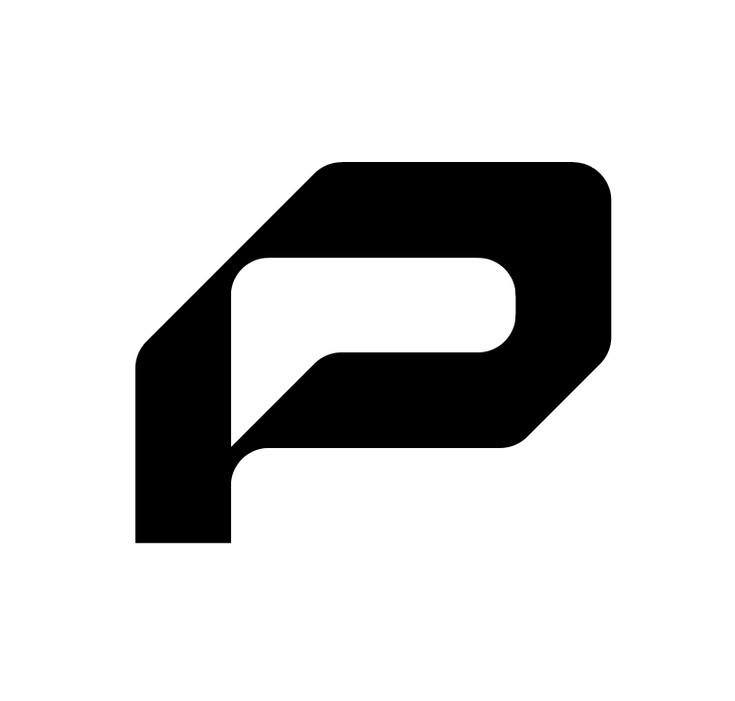
Probity
Solana’daki kripto varlıkların İslami açıdan uygun olup olmadığını anında gösteren tarama aracı
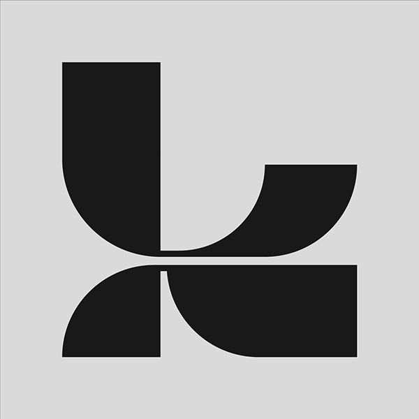
Kuroshitsuji
Telegram üzerinden konuşarak işlerinizi yaptıran Türkçe yapay zeka asistan ekibi
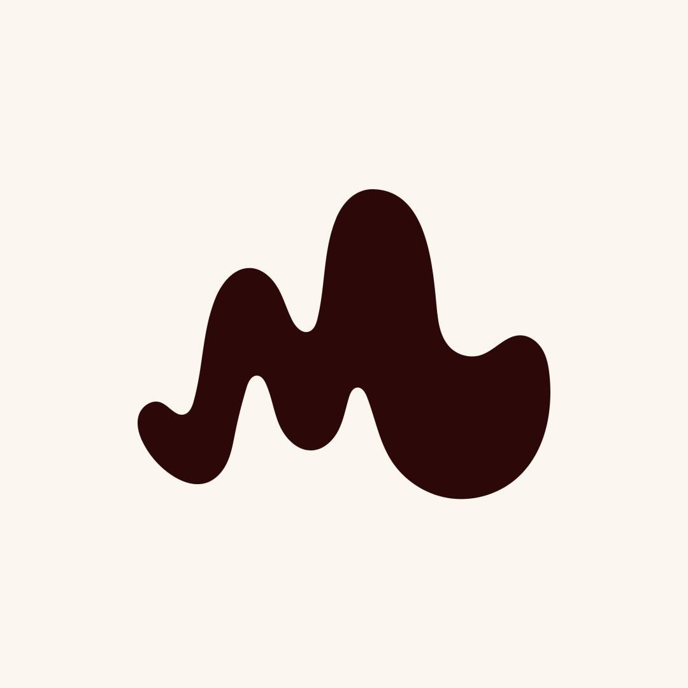
Magnesium
Birden fazla yapay zeka ajanını aynı anda, güvenli biçimde çalıştıran kendi sunucunuzdaki kontrol merkezi
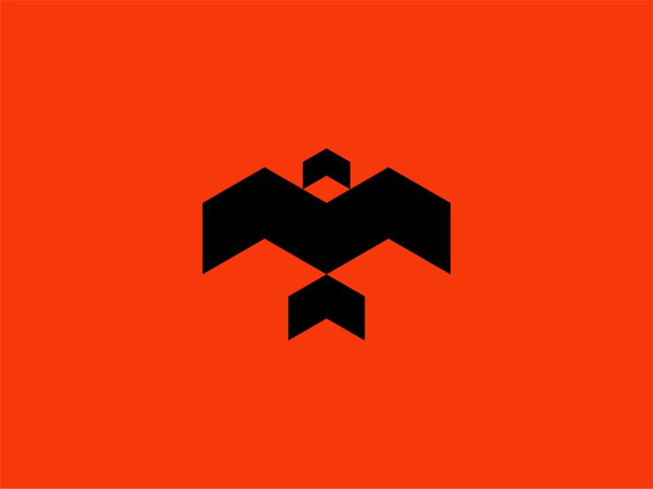
Prowl
Gen Z için telefonda çalışan, ek gelir fikirleri üretip takip eden yapay zeka asistanı
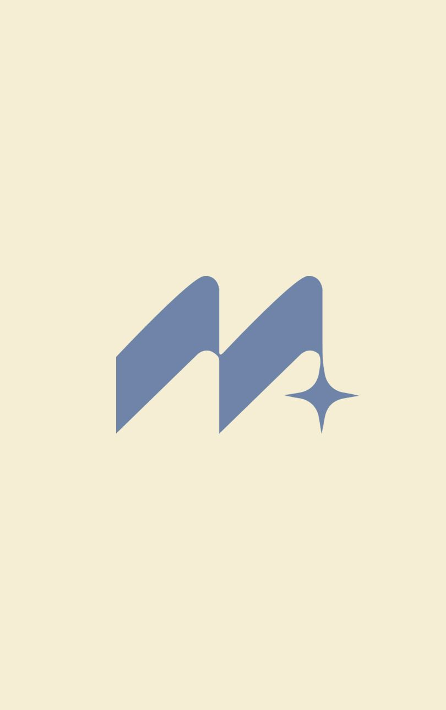
Mirage
Seçili kaynaklardan beslenip otomatik içerik üreten, Dubai pazarına özel içerik stüdyosu
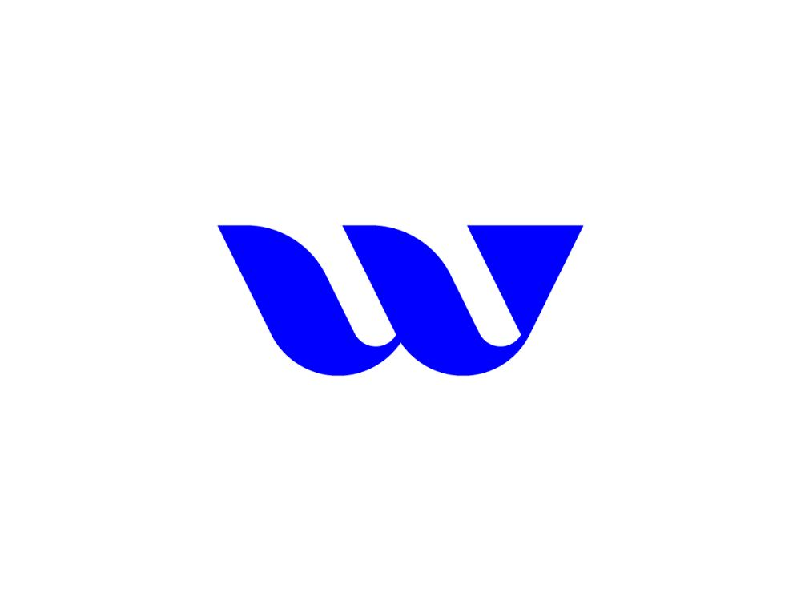
Wevent
Etkinlik biletlerini güvenle alıp satabileceğiniz, çift satışı engelleyen Türkiye pazaryeri
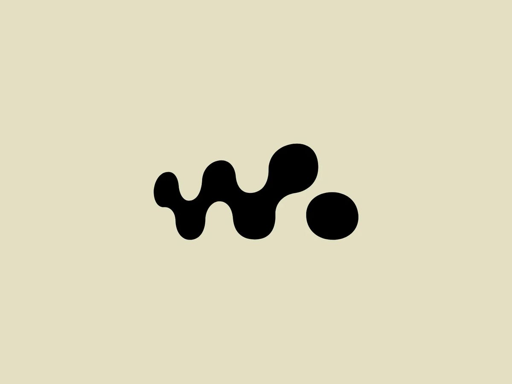
WISA
Kaydırdıkça hikayesi açılan, futbol temalı etkileşimli tanıtım sayfası
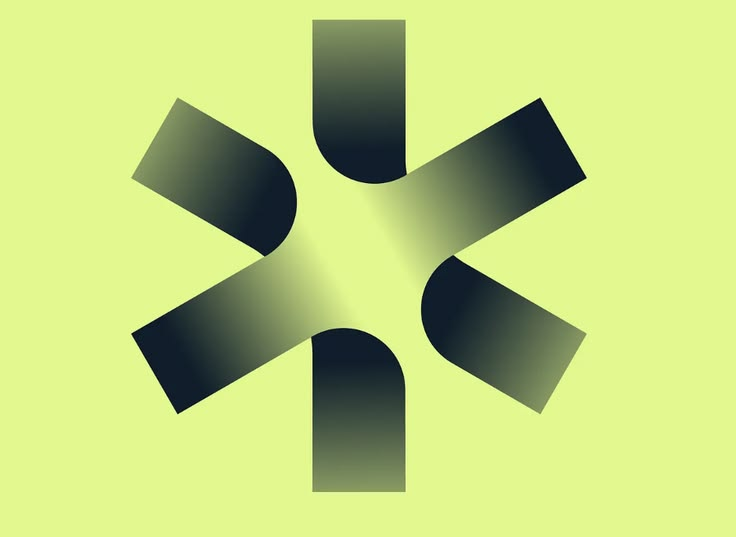
CuisinOS
Mutfaktan müşteriye tüm restoran operasyonunu tek yerden yöneten yapay zeka destekli platform
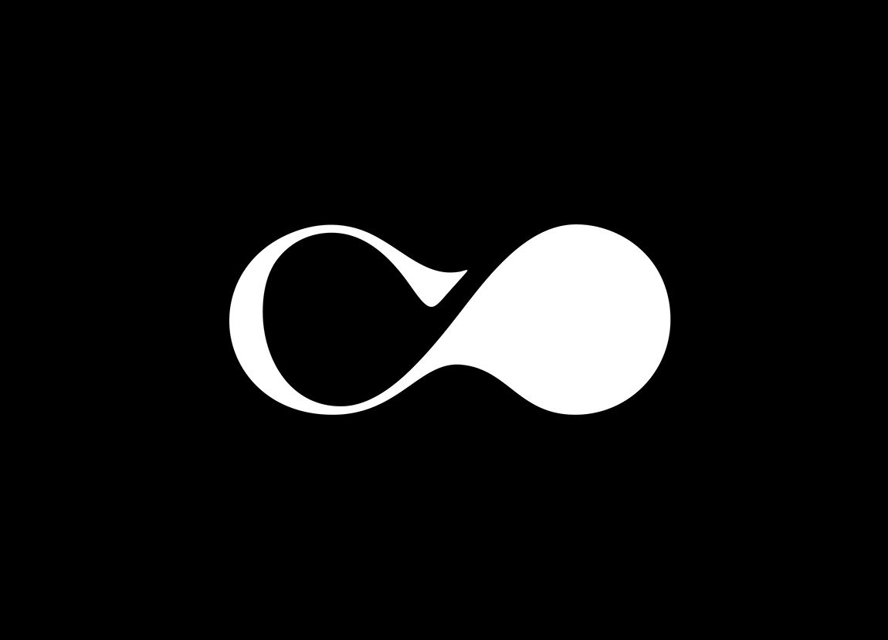
OppoLink
İnternet olmadan, sadece Bluetooth ile şifreli sesli görüşme yapmanızı sağlayan uygulama
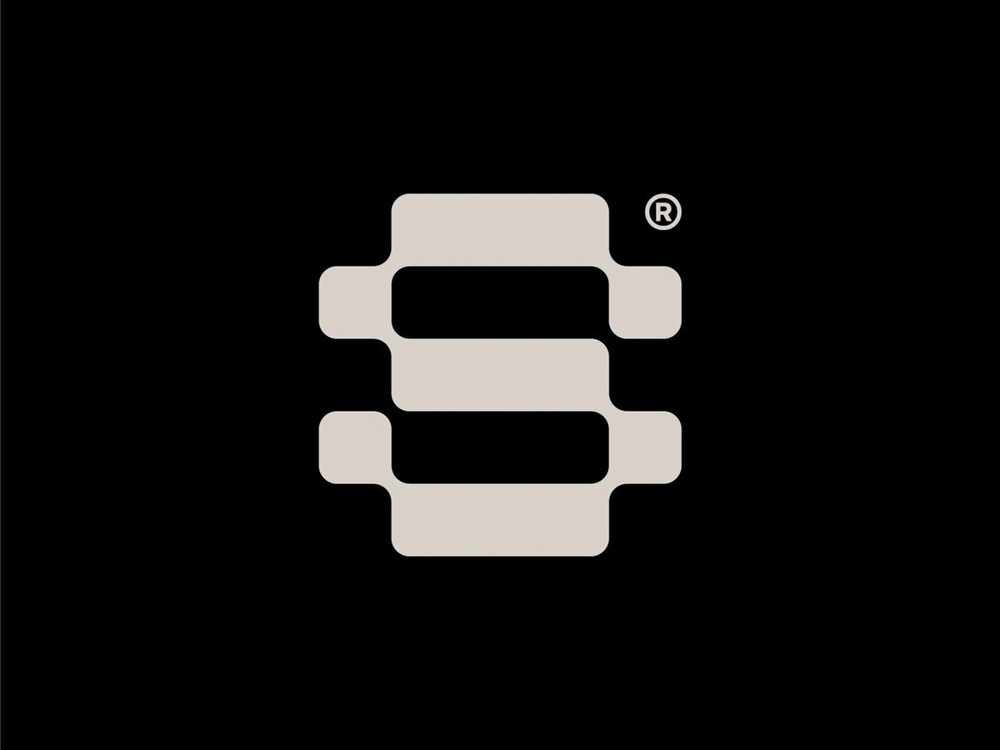
softlock
Radyo sinyallerinin nasıl çözüldüğünü sıfırdan, adım adım öğreten açık kaynak laboratuvar
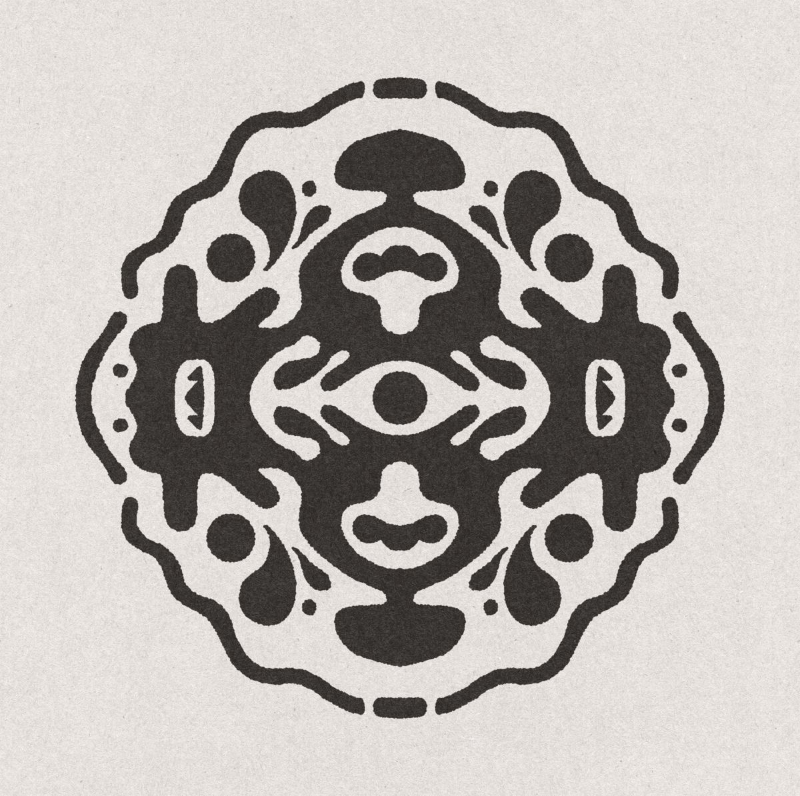
Rorschach
Açık kaynaklardan veri toplamayı otomatikleştiren, Türkiye odaklı araştırma platformu
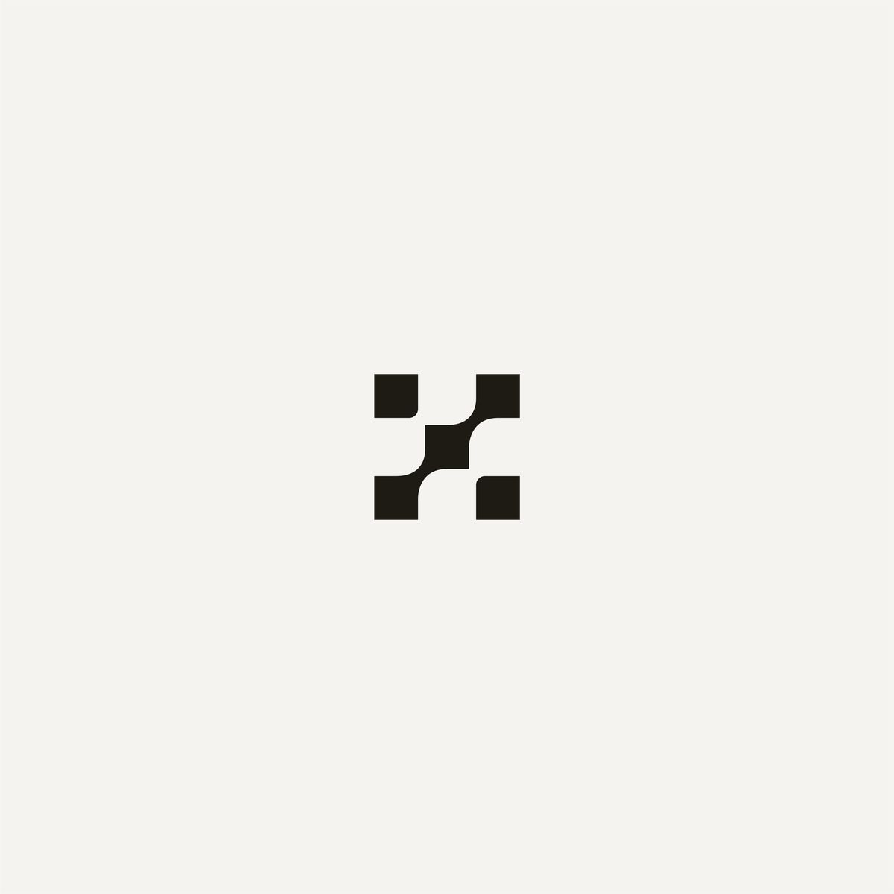
xqtc
Belirlediğiniz hesapların alıntı tweet’lerini otomatik toplayıp şık biçimde sergileyen araç
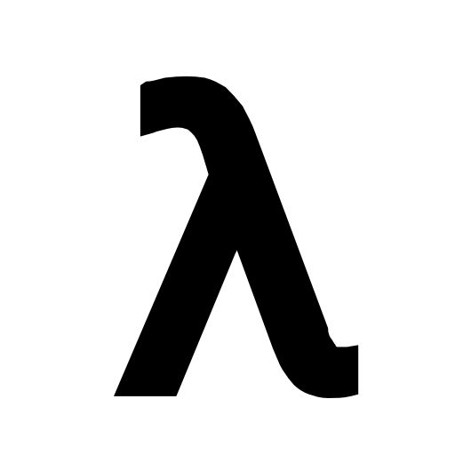
zk-lokomotive
Dosyaları gizliliği koruyarak güvenle aktarmayı hedefleyen sıfır-bilgi kriptografi altyapısı
Projeniz İçin
Bize Ulaşın.
Bir sonraki projenizi birlikte hayata geçirelim. Strateji, tasarım ve teknoloji bir arada.